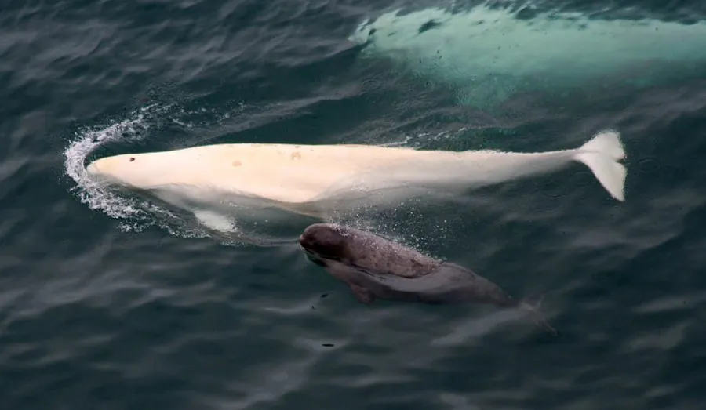

哺乳动物 · 动物界
白鲸 Delphinapterus leucas

北极海域的白色齿鲸，头部长有可改变形状的额隆，叫声丰富多变，被称为海中的金丝雀，善于群体活动。
- 分类
- 门脊索动物门纲哺乳纲目偶蹄目科一角鲸科属白鲸属
- 栖息环境
- 北极与亚北极的河口、浅海和冰缘水域
- 地理分布
- 北半球高纬度海域，从北冰洋、白令海到加拿大圣劳伦斯湾
- 保护级别
- IUCN 无危（LC）；CITES 附录Ⅱ
物种志
白鲸体长 3.5–5.5 米，体重 400–1500 kg，雄性大于雌性。它出生时呈灰色，随年龄增长逐渐变白，成年个体通体雪白；头部圆钝，额隆柔软可变，没有背鳍，颈部活动灵活，能转头；胸鳍短而圆，尾巴宽大。
白鲸分布于北半球的高纬度海域，从北冰洋、白令海到圣劳伦斯湾和哈德逊湾，栖息于河口、浅海和冰缘水域。它是高度社会化的齿鲸，常结成数十只甚至上千只的群体，以鱼类、乌贼、虾类和底栖无脊椎动物为食，能潜到数百米深处。白鲸叫声丰富，包括鸣叫、吱吱声、咔嗒声等，被称为“海中的金丝雀”；它额隆的形状会随声音发射而变化。雌鲸妊娠期约 14–15 个月，每胎 1 仔。因海冰变化、污染和航运干扰，部分种群面临威胁，白鲸在多地受到保护。
形态与习性
- 食性鱼类、乌贼、虾类与底栖无脊椎动物
- 体长3.5–5.5 m，雄性大于雌性
- 体重400–1500 kg
- 寿命约 30–50 年
- 繁殖妊娠期约 14–15 个月，每胎 1 仔
- 体色幼鲸灰色，成年后通体雪白
- 发声叫声丰富多变，被称为“海中的金丝雀”
趣味知识
- 白鲸的额隆柔软可变，能帮助它发出和聚焦声音。
- 它没有背鳍，因此能在冰层下灵活游动。
- 白鲸叫声丰富多变，被水手称为“海中的金丝雀”。
- 幼鲸出生时是灰色的，随年龄增长才变成雪白。